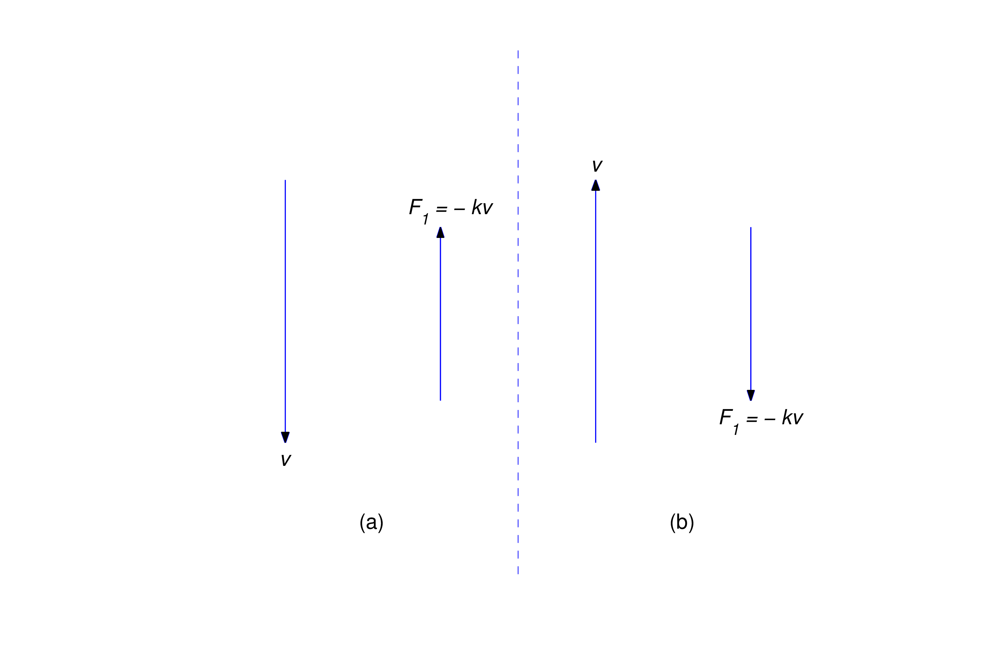
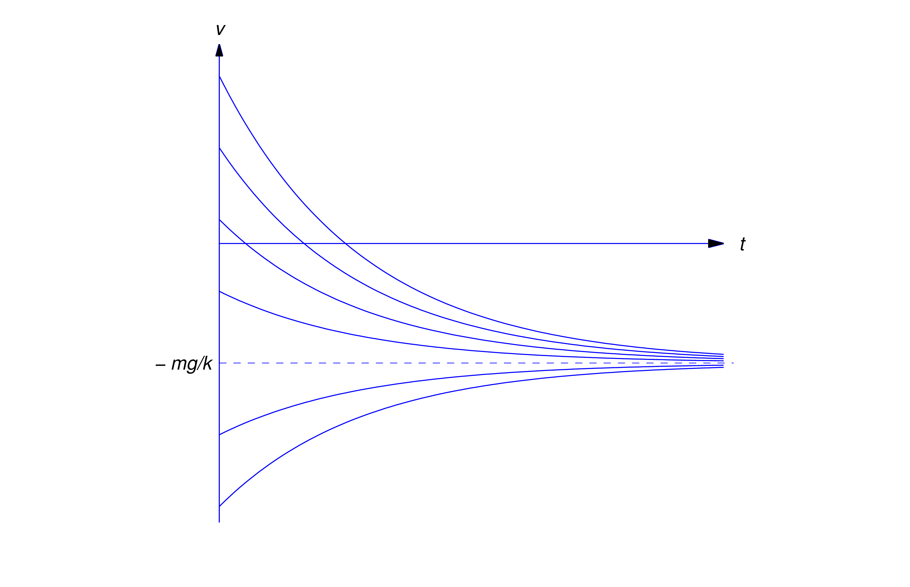
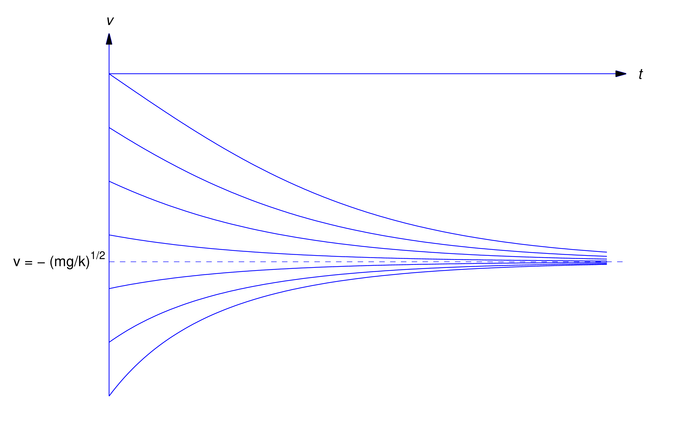
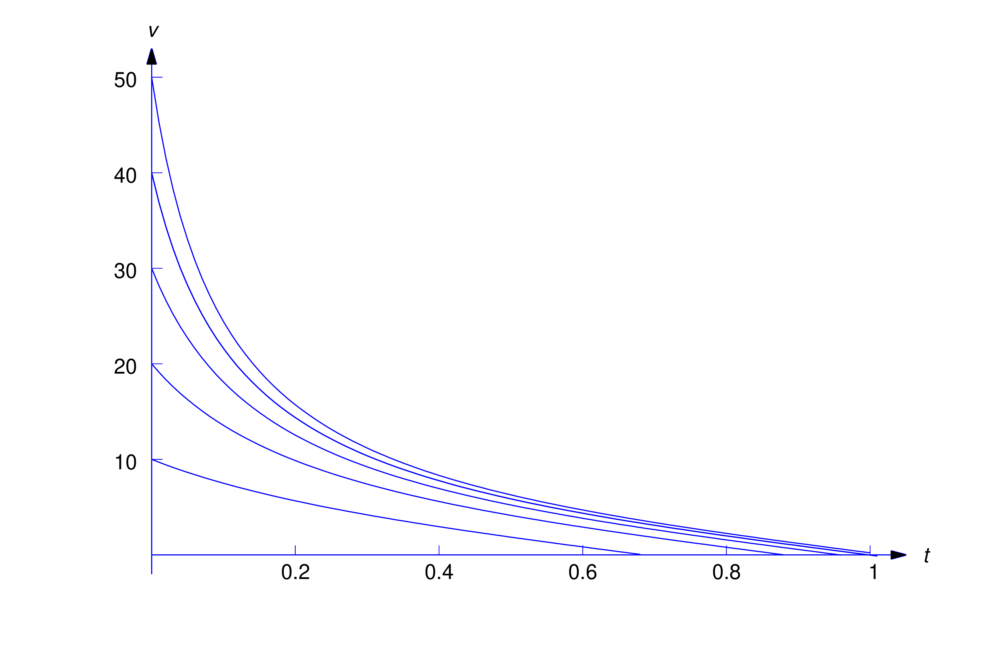
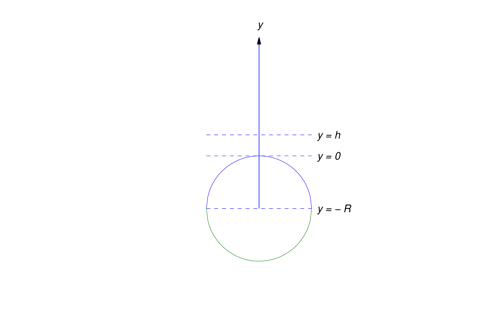

In this section we consider an object with constant mass \(m\) moving
along a line under a force \(F\). Let \(y=y(t)\) be the displacement of
the object from a reference point on the line at time \(t\), and let
\(v=v(t)\) and \(a=a(t)\) be the velocity and acceleration of the object
at time \(t\). Thus, \(v=\dot{y}\) and \(a=\dot{v}=\ddot{y}\). Newton’s second law of motion
asserts that the force \(F\) and the acceleration \(a\) are related by the
equation \begin {equation} \label {eq:4.3.1} F=ma\end {equation}
Units
In applications there are three main sets of units in use for length,
mass, force, and time: the cgs, mks, and British systems. All three use
the second as the unit of time. Table 1 shows the other units.
Consistent with (4.3.1), the unit of force in each system is defined to be the force required to
impart an acceleration of (one unit of length)\(/s^2\) to one unit of
mass.
Length
Force
Mass
cgs
centimeter (cm)
dyne (d)
gram (g)
mks
meter (m)
newton (N)
kilogram (kg)
British
foot (ft)
pound (lb)
slug (sl)
Table 1.
If we assume that Earth is a perfect sphere with constant mass density,
Newton’s law of gravitation (discussed later in this section) asserts that
the force exerted on an object by Earth’s gravitational field is
proportional to the mass of the object and inversely proportional to the
square of its distance from the center of Earth. However, if the object
remains sufficiently close to Earth’s surface, we may assume that the
gravitational force is constant and equal to its value at the surface. The
magnitude of this force is \(mg\), where \(g\) is called the
acceleration due to gravity
. (To be completely accurate, \(g\) should be called the
magnitude of the acceleration due to gravity at Earth’s surface
.) This quantity has been determined experimentally. Approximate
values of \(g\) are \[\begin {array}{rl} g &=980\ \mbox {cm/s}^2
\hskip 40pt \mbox {(cgs)} \\ g &=9.8\ \mbox {m/s}^2 \hskip 48pt \mbox
{(mks)} \\ g &=32\ \mbox {ft/s}^2 \hskip 52pt \mbox {(British)}\end
{array}\]
In general, the force \(F\) in (4.3.1) may depend upon \(t\), \(y\), and \(\dot{y}\). Since \(a=\ddot{y}\), (4.3.1) can be written in the form \begin {equation} \label {eq:4.3.2}
m\ddot{y}=F(t,y,\dot{y})\end {equation}
which is a second order equation. We’ll consider this equation with
restrictions on \(F\) later; however, since Chapter 2 dealt only with
first order equations, we consider here only problems in which (4.3.2) can be recast as a first order equation. This is possible if \(F\) does
not depend on \(y\), so (4.3.2) is of the form \[ m\ddot{y}=F(t,\dot{y})\] Letting \(v=\dot{y}\) and \(\dot{v}=\ddot{y}\) yields
a first order equation for \(v\): \begin {equation} \label {eq:4.3.3}
m\dot{v}=F(t,v)\end {equation}
Solving this equation yields \(v\) as a function of \(t\). If we know
\(y(t_0)\) for some time \(t_0\), we can integrate \(v\) to obtain \(y\)
as a function of \(t\).
Equations of the form (4.3.3) occur in problems involving motion through a resisting medium.
Motion Through a Resisting Medium Under Constant Gravitational Force
Now we consider an object moving vertically in some medium. We assume that
the only forces acting on the object are gravity and resistance from the
medium. We also assume that the motion takes place close to Earth’s
surface and take the upward direction to be positive, so the gravitational
force can be assumed to have the constant value \(-mg\). We’ll see that,
under reasonable assumptions on the resisting force, the velocity
approaches a limit as \(t\to \infty \). We call this limit the
terminal velocity.
An object with mass \(m\) moves under constant gravitational force
through a medium that exerts a resistance with magnitude proportional to
the speed of the object. (Recall that the speed of an object is \(|v|\),
the absolute value of its velocity \(v\).) Find the velocity of the
object as a function of \(t\), and find the terminal velocity. Assume
that the initial velocity is \(v_0\).
Solution
The total force acting on the object is \begin {equation} \label
{eq:4.3.4} F=-mg+F_1\end {equation}
where \(-mg\) is the force due to gravity and \(F_1\) is the resisting
force of the medium, which has magnitude \(k|v|\), where \(k\) is a
positive constant. If the object is moving downward (\(v\le 0\)), the
resisting force is upward (Figure 4.3.1(a)), so \[ F_1=k|v|=k(-v)=-kv\] On the other hand, if the object is moving
upward (\(v\ge 0\)), the resisting force is downward
(Figure 4.3.1(b)), so \[ F_1=-k|v|=-kv\] Thus,
(4.3.4) can be written as
\begin {equation} \label {eq:4.3.5} F=-mg-kv\end {equation}
regardless of the sign of the velocity.

Figure 4.3.1Resistive forces
From Newton’s second law of motion, \[ F=ma=m\dot{v}\] so (4.3.5) yields \[ m\dot{v}=-mg-kv\] or \begin {equation} \label {eq:4.3.6} \dot{v}+{k\over
m}v=-g\end {equation}
Since \(e^{-kt/m}\) is a solution of the complementary equation, the
solutions of (4.3.6) are of the form \(v=ue^{-kt/m}\), where \(\dot{u}e^{-kt/m}=-g\), so
\(\dot{u}=-ge^{kt/m}\). Hence, \[ u=-{mg\over k} e^{kt/m}+c\] so \begin
{equation} \label {eq:4.3.7} v=ue^{-kt/m}=-{mg\over k}+ce^{-kt/m}\end
{equation}
Since \(v(0)=v_0\), \[ v_0=-{mg\over k}+c\] so \[ c=v_0+{mg\over k} \] and
(4.3.7) becomes \[ v=-{mg\over k}+\left (v_0+{mg\over k}\right ) e^{-kt/m}\]
Letting \(t\to \infty \) here shows that the terminal velocity is \[ \lim
_{t\to \infty } v(t)=-{mg\over k}\] which is independent of the initial
velocity \(v_0\) (Figure 4.3.2).

Figure 4.3.2Solutions of \(m\dot{v}=-mg-kv\)
A 960-lb object is given an initial upward velocity of 60 ft/s near the
surface of Earth. The atmosphere resists the motion with a force of 3 lb
for each ft/s of speed. Assuming that the only other force acting on the
object is constant gravity, find its velocity \(v\) as a function of
\(t\), and find its terminal velocity.
Solution
Since \(mg=960\) and \(g=32\), \(m=960/32=30\). The atmospheric
resistance is \(-3v\) lb if \(v\) is expressed in feet per second.
Therefore \[ 30\dot{v}=-960-3v\] which we rewrite as \[ \dot{v}+{1\over 10}v=-32\]
Since \(e^{-t/10}\) is a solution of the complementary equation, the
solutions of this equation are of the form \(v=ue^{-t/10}\), where
\(\dot{u}e^{-t/10}=-32\), so \(\dot{u}=-32e^{t/10}\). Hence, \[ u=-320 e^{t/10}+c\]
so \begin {equation} \label {eq:4.3.8} v=ue^{-t/10}=-320+ce^{-t/10}\end
{equation}
The initial velocity is 60 ft/s in the upward (positive) direction; hence,
\(v_0=60\). Substituting \(t=0\) and \(v=60\) in (4.3.8) yields \[ 60=-320+c\] so \(c=380\), and (4.3.8) becomes \[ v=-320+380e^{-t/10}\ \mbox {ft/s} \] The terminal velocity is
\[ \lim _{t\to \infty }v(t)=-320\mbox { ft/s.} \]
A 10 kg mass is given an initial velocity \(v_0\le 0\) near Earth’s
surface. The only forces acting on it are gravity and atmospheric
resistance proportional to the square of the speed. Assuming that the
resistance is 8 N if the speed is 2 m/s, find the velocity of the object
as a function of \(t\), and find the terminal velocity.
Solution
Since the object is falling, the resistance is in the upward
(positive) direction. Hence, \begin {equation} \label {eq:4.3.9}
m\dot{v}=-mg+kv^2\end {equation}
where \(k\) is a constant. Since the magnitude of the resistance is 8 N
when \(v=2\) m/s, \[ k(2^2)=8\] so \(k=2\ \mbox {N-s}^2/\mbox {m}^2\).
Since \(m=10\) and \(g=9.8\), (4.3.9) becomes \begin {equation} \label {eq:4.3.10} 10\dot{v}=-98+2v^2=2(v^2-49)\end
{equation}
If \(v_0=-7\), then \(v\equiv -7\) for all \(t\ge 0\). If \(v_0\ne -7\),
we separate variables to obtain \begin {equation} \label {eq:4.3.11}
{1\over v^2-49}\dot{v}={1\over 5}\end {equation}
which is convenient for the required partial fraction expansion \begin
{equation} \label {eq:4.3.12} \frac {1}{v^2-49} =\frac {1}{(v-7)(v+7)}
={1\over 14}\left [{1\over v-7} -{1\over v+7}\right ]\end {equation}
Substituting (4.3.12) into (4.3.11) yields \[ {1\over 14}\left [{1\over v-7}-{1\over v+7}\right ]\dot{v}={1\over
5}\] so \[ \left [{1\over v-7}-{1\over v+7}\right ]\dot{v}={14\over 5}\]
Integrating this yields \[ \ln |v-7|-\ln |v+7|=14t/5+k\] Therefore \[
\left |{v-7\over v+7}\right |=e^ke^{14t/5}\] Since Theorem 2.3.1 implies that \((v-7)/(v+7)\) can’t change sign (why?), we can rewrite the
last equation as \begin {equation} \label {eq:4.3.13} {v-7\over
v+7}=ce^{14t/5}\end {equation}
which is an implicit solution of (4.3.10). Solving this for \(v\) yields \begin {equation} \label {eq:4.3.14}
v=-7{c+e^{-14t/5}\over c-e^{-14t/5}}\end {equation}
Since \(v(0)=v_0\), it (4.3.13) implies that \[ c={v_0-7\over v_0+7}\] Substituting this into (4.3.14) and simplifying yields \[ v=-7{v_0(1+e^{-14t/5})-7(1-e^{-14t/5})\over
v_0(1-e^{-14t/5})-7(1+e^{-14t/5}}\] Since \(v_0\le 0\), \(v\) is defined
and negative for all \(t>0\). The terminal velocity is \[ \lim _{t\to
\infty } v(t)=-7\ \mbox {m/s}\] independent of \(v_0\). More generally, it
can be shown (Exercise 11) that if \(v\) is any solution of (4.3.9) such that \(v_0\le 0\) then \[ \lim _{t\to \infty }v(t)=-\sqrt {mg\over
k} \] (Figure 4.3.3).

Figure 4.3.3
Solutions of \(m\dot{v}=-mg+kv^2,\ v(0)=v_0\le 0\)
A 10-kg mass is launched vertically upward from Earth’s surface with an
initial velocity of \(v_0\) m/s. The only forces acting on the mass are
gravity and atmospheric resistance proportional to the square of the
speed. Assuming that the atmospheric resistance is 8 N if the speed is 2
m/s, find the time \(T\) required for the mass to reach maximum
altitude.
Solution
The mass will climb while \(v>0 \) and reach its maximum altitude
when \(v=0\). Therefore \(v>0\) for \(0\le t<T\) and \(v(T)=0\).
Although the mass of the object and our assumptions concerning the forces
acting on it are the same as those in Example 3, (4.3.10) does not apply here, since the resisting force is negative if
\(v>0\); therefore, we replace (4.3.10) by
\begin {equation} \label {eq:4.3.15} 10\dot{v}=-98-2v^2\end {equation}
Separating variables yields \[ {5\over v^2+49}\dot{v}=-1\] and integrating this
yields \[ {5\over 7}\tan ^{-1}{v\over 7}=-t+c\] (Recall that \(\tan
^{-1}u\) is the number \(\theta \) such that \(-\pi /2 < \theta <
\pi /2\) and \(\tan \theta =u\).) Since \(v(0)=v_0\), \[ c={5\over 7}\tan
^{-1}{v_0\over 7}\] so \(v\) is defined implicitly by \begin {equation}
\label {eq:4.3.16} {5\over 7} \tan ^{-1}{v\over 7}=-t+{5\over 7} \tan
^{-1}{v_0\over 7}, \quad 0\le t\le T\end {equation}
Solving this for \(v\) yields \begin {equation} \label {eq:4.3.17} v=7\tan
\left (-{7t\over 5}+\tan ^{-1}{v_0\over 7}\right )\end {equation}
Using the identity \[ \tan (A-B)={\tan A-\tan B\over 1+\tan A\tan B} \]
with \(A=\tan ^{-1}(v_0/7)\) and \(B=7t/5\), and noting that \(\tan (\tan
^{-1}\theta )=\theta \), we can simplify (4.3.17) to \[ v=7{v_0-7\tan (7t/5)\over 7+v_0\tan (7t/5)}\]
Since \(v(T)=0\) and \(\tan ^{-1}(0)=0\), (4.3.16) implies that \[ -T+{5\over 7} \tan ^{-1}{v_0\over 7}=0\] Therefore \[
T={5\over 7} \tan ^{-1}{v_0\over 7}\] Since \(\tan ^{-1}(v_0/7)<\pi
/2\) for all \(v_0\), the time required for the mass to reach its maximum
altitude is less than \[ {5\pi \over 14} \approx 1.122\ \mbox {s} \]
regardless of the initial velocity. Figure
4.3.4
shows graphs of \(v\) over \([0,T]\) for various values of \(v_0\).

Figure 4.3.4
Solutions of (4.3.15) for various \(v_0>0\)
Escape Velocity
Suppose a space vehicle is launched vertically and its fuel is exhausted
when the vehicle reaches an altitude \(h\) above Earth, where \(h\) is
sufficiently large so that resistance due to Earth’s atmosphere can be
neglected. Let \(t=0\) be the time when burnout occurs. Assuming that the
gravitational forces of all other celestial bodies can be neglected, the
motion of the vehicle for \(t > 0\) is that of an object with constant
mass \(m\) under the influence of Earth’s gravitational force, which we
now assume to vary inversely with the square of the distance from Earth’s
center; thus, if we take the upward direction to be positive then
gravitational force on the vehicle at an altitude \(y\) above Earth is
\begin {equation} \label {eq:4.3.18} F=-{K\over (y+R)^2}\end {equation}
where \(R\) is Earth’s radius (Figure
4.3.5
).

Figure 4.3.5Escape velocity
Since \(F=-mg\) when \(y=0\), setting \(y=0\) in (4.3.18) yields \[ -mg=-{K\over R^2}\] therefore \(K=mgR^2\) and (4.3.18) can be written more specifically as \begin {equation} \label {eq:4.3.19}
F=-{mgR^2\over (y+R)^2}\end {equation}
From Newton’s second law of motion, \[ F=m{d^2y\over dt^2}\] so (4.3.19) implies that \begin {equation} \label {eq:4.3.20} {d^2y\over
dt^2}=-{gR^2\over (y+R)^2}\end {equation}
We’ll show that there’s a number \(v_e\), called the
escape velocity,
with these properties:
If \(v_0\ge v_e\) then \(v(t)>0\) for all \(t>0\), and the vehicle
continues to climb for all \(t>0\); that is, it “escapes” Earth. (Is
it really so obvious that \(\lim _{t\to \infty }y(t)=\infty \) in this
case? For a proof, see Exercise
20
.)
If \(v_0<v_e\) then \(v(t)\) decreases to zero and becomes negative.
Therefore the vehicle attains a maximum altitude \(y_m\) and falls back
to Earth.
Since (4.3.20) is second order, we can’t solve it by methods discussed so far. However,
we’re concerned with \(v\) rather than \(y\), and \(v\) is easier to find.
Since \(v=\dot{y}\) the chain rule implies that \[ {d^2y\over dt^2}={dv\over
dt}={dv\over dy}{dy\over dt}=v{dv\over dy}\] Substituting this into (4.3.20) yields the first order separable equation \begin {equation} \label
{eq:4.3.21} v{dv\over dy}=-{gR^2\over (y+R)^2}\end {equation}
When \(t=0\), the velocity is \(v_0\) and the altitude is \(h\). Therefore
we can obtain \(v\) as a function of \(y\) by solving the initial value
problem \[ v{dv\over dy}=-{gR^2\over (y+R)^2},\quad v(h)=v_0\]
Integrating (4.3.21) with respect to \(y\) yields \begin {equation} \label {eq:4.3.22}
{v^2\over 2}={gR^2\over y+R}+c\end {equation}
Since \(v(h)=v_0\), \[ c={v_0^2\over 2}-{gR^2\over h+R}\] so (4.3.22) becomes \begin {equation} \label {eq:4.3.23} {v^2\over 2}={gR^2\over
y+R}+\left ({v_0^2\over 2}- {gR^2\over h+R}\right )\end {equation}
If \[ v_0 \ge \left ({2gR^2\over h+R}\right )^{1/2}\] the parenthetical
expression in (4.3.23) is nonnegative, so \(v(y)>0\) for \(y>h\). This proves that
there’s an escape velocity \(v_e\). We’ll now prove that \[ v_e=\left
({2gR^2\over h+R}\right )^{1/2} \] by showing that the vehicle falls back
to Earth if \begin {equation} \label {eq:4.3.24} v_0 <\left
({2gR^2\over h+R}\right )^{1/2}\end {equation}
If (4.3.24) holds then the parenthetical expression in (4.3.23) is negative and the vehicle will attain a maximum altitude \(y_m>h\)
that satisfies the equation \[ 0={gR^2\over y_m+R}+\left ({v_0^2\over 2}-
{gR^2\over h+R}\right )\] The velocity will be zero at the maximum
altitude, and the object will then fall to Earth under the influence of
gravity.